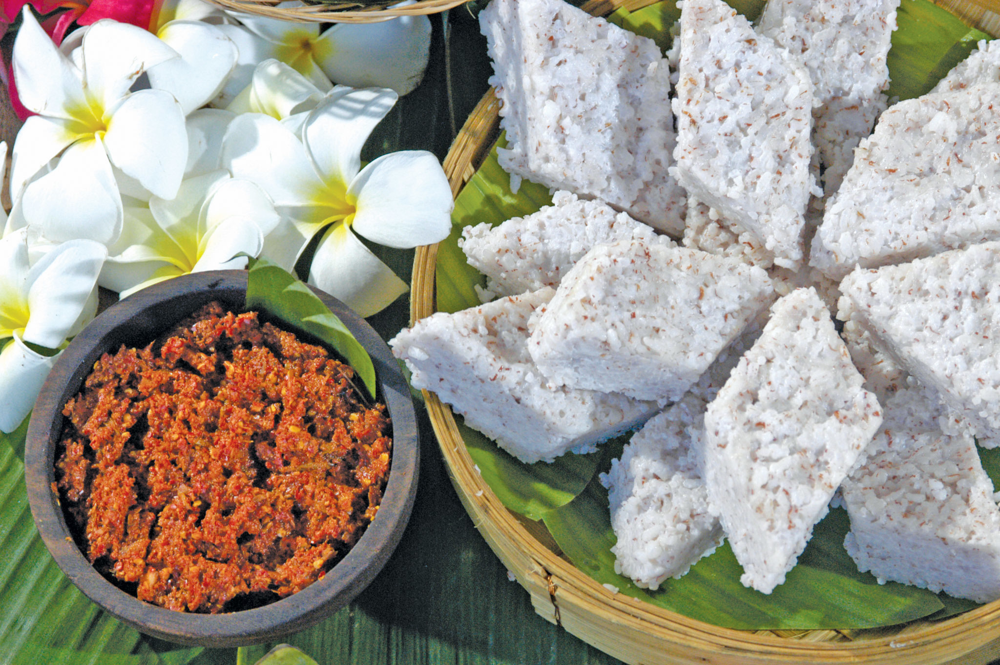

Sri Lankan Hoppers - Aappa
"Wow! Wow!Island's Pride: Heavenly Hoppers"
View Recipe

Sri Lankan Milk Rice - Kiribath
"Coconut Comfort: Sri Lankan Kiribath"
View Recipe

Sri Lankan cocount rotee - pol rotee
"Tropical Bliss: Sri Lankan Coconut Roti Recipe"
View Recipe
Sri Lankan Pittu - pittu / Kurakkan Pittu
"Hearty Delight: Sri Lankan Pittu Recipe"
View Recipe
String Hoppers - Sri lankan Indi Aappa
"Silken Strands: Sri Lankan String Hoppers Recipe"
View Recipe

Sri Lankan pot Biriyani - Chiken Biriyani
"Sri Lankan Biriyani Bliss! Yummy Yummy!"
View Recipe

Sri Lankan Fried Rice - Fried Rice
"Fragrant Fusion: Sri Lankan Fried Rice"
View Recipe

Sri Lankan Koththu - Koththu Rotee
"Sizzling Sensation: Sri Lankan Koththu Delight"
View Recipe